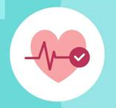
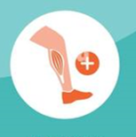
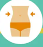
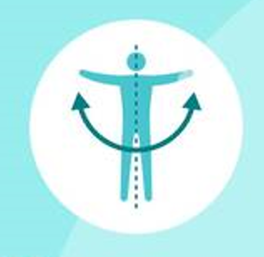
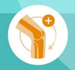

El ciclismo es una forma versátil y beneficiosa que puede mejorar significativamente la salud y el bienestar físico y mental.

Mejora cardiovascular: Fortalece el corazón y mejora la circulación

Fortalecimiento muscular: Tonifica piernas, glúteos y músculos centrales.

Bajo impacto: Protege las articulaciones y es suave para el cuerpo.
Transporte sostenible: Ayuda a reducir la contaminación del aire y la congestión del tráfico, lo que contribuye a un entorno más saludable.
Reducción de estrés: Libera endorfinas, reduce el estrés y mejora el estado de ánimo.
Control del peso: El ciclismo regular puede ayudar a quemar calorías y mantener un peso corporal saludable.

Socialización: Permite unirse a grupos y participar en eventos sociales.

Menor riesgo de enfermedades crónicas: Disminuye el riesgo de diabetes y enfermedades cardíacas.